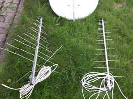
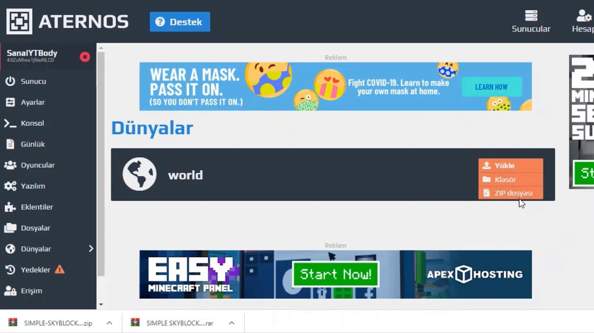

Kokia antena reikalinga skaitmeninei televizijai? | Skaitmeninė televizija

Pradinis puslapis Skaitmeninės TV standartai Skaitmeninė antžeminė TV (DVB-T) Skaitmeninė kabelinė TV (DVB-C) Skaitmeninė televizija Lietuvoje DVB-T Lietuvoje DVB-C Lietuvoje IPTV Lietuvoje DAB Radijas Lietuvoje Skaitmeninės TV signalo stiprumas Palydovai matomi Lietuvoje Skaitmeninės TV įranga TV Priedėliai TV antenos Kambarinė TV antena DVB-S Palydovinė televizija Informacija Skaitmeninė televizija – kas tai? Kaip žiūrėti televiziją gyvenant užsienyje Radijo stočių dažniai Kaimyninių šalių DVB-T transliacijos Dažniausiai užduodami klausimai Kontaktai Puslapio meniu
Skaitmeninės TV Antenos
Antenos būtinos skaitmeninei antžeminei TV (DVB-T), skaitmeninei mikrobanginei TV (DVB-C) ir skaitmeninei palydovinei TV (DVB-S, DVB-S2) žiūrėti. Kitoms rūšims antenos nėra reikalingos.
Čia plačiau bus aprašytos skaitmeninės antžeminės TV (DVB-T) ir skaitmeninės mikrobanginės TV (DVB-C) antenos. Apie skaitmeninės palydovinės TV antenas rasite čia.
Antenos skaitmeninei antžeminei TV (DVB-T)
Tinka visos įprastinės ir seniau naudotos antenos kaip ir analoginėms TV transliacijoms priimti.
Tačiau verta paminėti, kad yra dvi bene geriausios, galingiausios antenų formos skaitmeninei televizijai, todėl kai mūsų klausia kokia antena geriausia skaitmeninei televizijai žiūrėti, mes rekomenduojame šias antenas:
DIGILINE DVB-T ANTENA
Antena skirta žiūrėti skaitmeninei televizijai blogai pasiekiamose signalo vietose. Super didelis stiprinimas. veikia 80-100km atstumu. Galima Kaune iš Vilniaus pagauti signalą ir matyti HD kanalus.
YAGI DTX-48F
Kryptinė antena DVB-T antžeminei skaitmeninei televizijai. Labai geras 11-16dBi striptinimas (pasyvus). Nereikalingas elektros šaltinis. Antena su integruotu LTE filtru. Puikiai dirba esant toliau nuo transliacijos stoties (Nesunkiai pagausite kanalus 100+ km atstumu )
DIGILINE DVB-T MAX ANTENA
Antena skirta žiūrėti skaitmeninei televizijai labai blogai pasiekiamose signalo vietose. Super didelis stiprinimas. veikia 80-100km atstumu.
Antena TV Star T-415A
Neturint sąlygų lauko antenos įrengimui kaip alternatyvą galite naudoti kambarinę anteną . Šiai antenai reikės papildomo elektros lizdo, naudojimo atstumas bus mažesnis nei lauko antenų ir gali atsirasti trukdžių dėl namuose veikiančių elektros įrenginių (šaldytuvai, oro kondicionieriai, šildytuvai)
Prekybos vietosPastaba: Prieš pirkdami anteną, būtinai pasidomėkite ar ji pritaikyta visam skaitmeninių kanalų dažniui (21-69). Taip pat atminkite, kad gera antena be stiprintuvo yra visada geriau, nei bloga antena su stiprintuvu. Esant geram signalui stiprintuvas tik sustiprina visus triukšmus ir visiškai sugadina signalą (parduotuvėse tokių antenų visada pilna).
Antenos skaitmeninei mikrobanginei TV (DVB-C)
Vienas svarbus akcentas antena skaitmeninei mikrobanginei TV žiūrėti turi būti nukreipta tiesiai į bokštą, kuriame yra patalpintas retransliatorius. Taigi, būtinas tiesioginis matomumas į TV bokštą. Be to, mikrobangos labai jautrios drėgmei, todėl esant blogam orui, gali atsirasti trikdžių.
Atsakome į jūsų klausimus apie antenos pasirinkimą
Vis dar sulaukiame klausimų kaip pasirinkti TV anteną, todėl dažniausiai užduodamus klausimus atsakome čia:
Kokia antena reikalinga skaitmeninei televizijai?
Antena parenkama pagal skaitmeninės televizijos tipą. Išjungus analoginę televiziją dauguma vartotojų perėjo prie DVB-T tipo skaitmeninės televizijos ir įsigijo tam skirtus TV priedėlius arba atsinaujino savo televizorius. Teoriškai, šiai skaitmeninei televizijai žiūrėti tinka įprastinė, anksčiau naudota kambarinė arba lauko TV antena.
Tačiau priklausomai nuo to, koks atstumas tarp jūsų televizoriaus ir skaitmeninės translacijos stoties bokšto, ne visais atvejais pavyksta išsisukti su sena antena. Tokiais atvejais rekomendudojame įsigyti pasyvią UHF anteną.
Ar galima prie vienos antenos jungti kelis DVB-T įrenginius?
Taip, prie vienos UHF antenos šakotuvo pagalba galima prijungti daugiau nei vieną TV priedėlį arba televizorių, vaido kokybė nuo to neprastėja.
Kokią DVB-T anteną naudoti automobilyje?
Automobiliuose montuojamos štai tokios DVB-T antenos:
Ar tinka kambarinės TV antenos skaitmeninei televizijai?
Taip, įprastos kambarinės antenos tinka skaitmeninei televizijai žiūrėti, tačiau esant galimybei rekomenduojame rinktis elektros nenaudojančią, pasyvią UHF lauko anteną.
Kambarinė TV antena (aktyvi)
Logoperiodinė lauko antena (pasyvi)
Ar skaitmeninės televizijos antenai reikalinga elektra?
Dauguma kambarinių antenų kurias rasite prekybos centruose yra aktyvios, t.y. jungiamos į rozetę. Neprijungus tokios antenos prie elektros ji neturės jokio efekto ir televizijos matyti negalėsite. Lauko antenos gaminamos tiek aktyvios tiek pasyvios ir šioje vietoje pasyvi antena yra žymiai pranašesnė nes veikia lygiai taip pat gerai neeikvodama elektros energijos veltui.
Ar galima lauko TV anteną naudoti viduje?
Taip, laukinė skaitmeninės TV antena veiks ir viduje ar įstiklintame balkone tačiau atkreipkite dėmesį, kad dauguma UHF lauko antenų yra kryptinės ir privalo būti nukreiptos link transliuojančio bokšto. Todėl esant didesniu atstumu nuo transliacijos stoties būtinai atsižvelkite į šią sąlygą.
Prekybos vietos
Skaitmeninės paslaugos
DAB+ Radijas DVB-T DVB-C DVB-S IPTVInformacija
TV Signalo kokybė Skaitmeninės TV antenos Transliacijos gyvenantiems užsienyje Dažniausiai užduodami klausimai Parašykite mums Facebook Sportas online tiesiogiai - theSport.lt